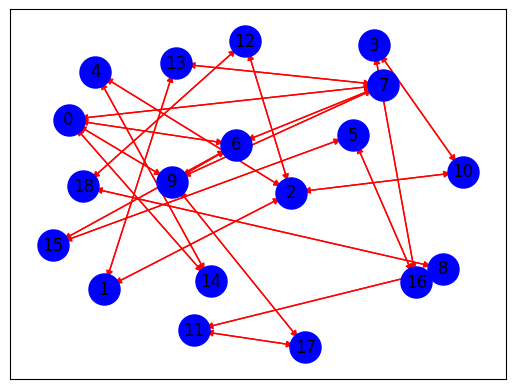

!pip install nltk
Requirement already satisfied: nltk in /usr/local/lib/python3.10/dist-packages (3.9.1)
Requirement already satisfied: click in /usr/local/lib/python3.10/dist-packages (from nltk) (8.1.7)
Requirement already satisfied: joblib in /usr/local/lib/python3.10/dist-packages (from nltk) (1.4.2)
Requirement already satisfied: regex>=2021.8.3 in /usr/local/lib/python3.10/dist-packages (from nltk) (2024.11.6)
Requirement already satisfied: tqdm in /usr/local/lib/python3.10/dist-packages (from nltk) (4.67.1)
from google.colab import drive
drive.mount('/content/drive')
---------------------------------------------------------------------------
KeyboardInterrupt Traceback (most recent call last)
<ipython-input-2-d5df0069828e> in <cell line: 2>()
1 from google.colab import drive
----> 2 drive.mount('/content/drive')
/usr/local/lib/python3.10/dist-packages/google/colab/drive.py in mount(mountpoint, force_remount, timeout_ms, readonly)
98 def mount(mountpoint, force_remount=False, timeout_ms=120000, readonly=False):
99 """Mount your Google Drive at the specified mountpoint path."""
--> 100 return _mount(
101 mountpoint,
102 force_remount=force_remount,
/usr/local/lib/python3.10/dist-packages/google/colab/drive.py in _mount(mountpoint, force_remount, timeout_ms, ephemeral, readonly)
135 )
136 if ephemeral:
--> 137 _message.blocking_request(
138 'request_auth',
139 request={'authType': 'dfs_ephemeral'},
/usr/local/lib/python3.10/dist-packages/google/colab/_message.py in blocking_request(request_type, request, timeout_sec, parent)
174 request_type, request, parent=parent, expect_reply=True
175 )
--> 176 return read_reply_from_input(request_id, timeout_sec)
/usr/local/lib/python3.10/dist-packages/google/colab/_message.py in read_reply_from_input(message_id, timeout_sec)
94 reply = _read_next_input_message()
95 if reply == _NOT_READY or not isinstance(reply, dict):
---> 96 time.sleep(0.025)
97 continue
98 if (
KeyboardInterrupt:
import nltk
from nltk.corpus import stopwords
from nltk.tokenize import word_tokenize
import re
# Library untuk data manipulation
import pandas as pd
import networkx as nx
import matplotlib.pyplot as plt
from tqdm import tqdm
# Library untuk text similarity
from sklearn.metrics.pairwise import cosine_similarity
data = pd.read_csv('hasil_crowling.csv')
data
| Judul | Tanggal | Ringkasan | Kategori | |
|---|---|---|---|---|
| 0 | Viral Sopir Truk Nekat Lawan Arah di Jakut, Po... | 16 Okt 2024 18:04 | Dalam rekaman yang diunggah terlihat sopir tru... | Peristiwa |
| 1 | Polisi Pastikan 2 Tersangka Pencabulan di Pant... | 16 Okt 2024 18:02 | Kabid Humas Polda Metro Jaya, Kombes Pol Ade A... | Peristiwa |
| 2 | Sejumlah Tokoh dan Pakar Siap Sukseskan Pelant... | 16 Okt 2024 16:05 | Mulusnya transisi pemerintahan dapat menjaga s... | Politik |
| 3 | Kasus Emas Antam, Saksi Sebut Budi Said Lakuka... | 16 Okt 2024 16:01 | Mantan Manajer Retail PT Antam, Nuning Septi W... | Peristiwa |
| 4 | 5 Fakta Terkait Budi Gunawan Diberhentikan dar... | 16 Okt 2024 16:00 | Dewan Perwakilan Rakyat (DPR) RI telah menerim... | Peristiwa |
| 5 | Pramono: Semua Ketum Parpol Teman Saya, Nanti ... | 16 Okt 2024 15:51 | Calon Gubernur Jakarta, Pramono Anung mengaku ... | News |
| 6 | DPR Minta Herindra Bisa Netral saat Sudah Resm... | 16 Okt 2024 15:41 | Kepada Herindra, Puan menitipkan pesan khusus ... | Peristiwa |
| 7 | Pengamat Nilai Jika SK-ADT Pimpin Sulut, Dukun... | 16 Okt 2024 15:25 | Pengamat politik dan pemerintahan Sulawesi Uta... | Politik |
| 8 | Cegah Banjir Terulang, Pramono Bakal Bebaskan ... | 16 Okt 2024 15:22 | Untuk mengatasi banjir di daerah bantaran kali... | News |
| 9 | Puan Maharani Masih Irit Bicara soal Pertemuan... | 16 Okt 2024 15:03 | Ketua DPP PDI Perjuangan, Puan Maharani belum ... | Politik |
| 10 | Selama 3 Hari, 768 Pengendara Terjaring Operas... | 16 Okt 2024 15:02 | Ade Ary merincikan, 518 pelanggar dari 768 pel... | Peristiwa |
| 11 | Pemberantasan Korupsi Jadi Tantangan Pemerinta... | 16 Okt 2024 15:01 | Prabowo-Gibran dihadapkan pada tugas berat unt... | Peristiwa |
| 12 | Transaksi Digital Dinilai Mampu Tingkatkan Ink... | 16 Okt 2024 14:58 | Erwin melihat perkembangan transaksi digital t... | Peristiwa |
| 13 | Puan: DPR Terima Herindra Jadi Calon Kepala BI... | 16 Okt 2024 14:49 | Puan mejelaskan, usai Herindra dinyatakan laya... | Peristiwa |
| 14 | Polisi Akan Panggil Olla Ramlan sebagai Saksi ... | 16 Okt 2024 14:44 | Polisi akan memanggil artis Olla Ramlan sebaga... | Peristiwa |
| 15 | Hari Parlemen Indonesia, Novita Hardini Soroti... | 16 Okt 2024 14:31 | Novita menegaskan bahwa kehadiran perempuan di... | Politik |
| 16 | Tak Senang Ada Penebangan Pohon, Seorang Pria ... | 16 Okt 2024 14:30 | Seorang warga diduga mengacungkan senjata api ... | Megapolitan |
| 17 | Polisi Selidiki Laporan Olla Ramlan soal Pence... | 16 Okt 2024 14:11 | Polisi menerangkan, akun TikTok dan Instagram ... | Peristiwa |
| 18 | Pesantren Didorong Jadi Lembaga Pendidikan Ung... | 16 Okt 2024 14:04 | Di masa depan, pesantren diharapkan menjadi le... | Peristiwa |
| 19 | 7 Fakta Terkini Terkait Kasus Pelecehan Seksua... | 16 Okt 2024 14:00 | Polres Metro Tangerang mengungkap kronologi te... | Peristiwa |
| 20 | Jokowi Resmikan Dua Ruas Tol Trans Sumatera Se... | 16 Okt 2024 13:45 | Presiden Joko Widodo atau Jokowi meresmikan du... | Peristiwa |
| 21 | Pembekalan Calon Menteri, Prabowo Subianto Und... | 16 Okt 2024 13:40 | Presiden terpilih Prabowo Subianto mengundang ... | Politik |
| 22 | Permintaan Prabowo ke Todotua Pasaribu: Ciptak... | 16 Okt 2024 13:31 | Todotua mengungkapkan bahwa pertemuan tersebut... | Peristiwa |
| 23 | Jokowi Belum Beli Tiket Pesawat ke Solo untuk ... | 16 Okt 2024 13:16 | Presiden Joko Widodo (Jokowi) mengaku belum ta... | Peristiwa |
| 24 | Program Asta Cita Prabowo-Gibran Diharap Bisa ... | 16 Okt 2024 13:00 | PB HMI berharap Prabowo dan Gibran tidak hanya... | Peristiwa |
| 25 | Kalah Lawan China, Jokowi Optimistis Timnas In... | 16 Okt 2024 12:55 | Jokowi menanggapi santai soal kekalahan Indone... | Peristiwa |
| 26 | Pemprov Kalsel Dorong Perangkat Kehumasan Meng... | 16 Okt 2024 12:45 | Pemprov Kalimantan Selatan, melalui Diskominfo... | News |
| 27 | Herindra Bakal Dilantik Sebagai Kepala BIN Bar... | 16 Okt 2024 12:24 | Sebelum tes dimulai pukul 11.00 WIB, Herindra ... | Peristiwa |
| 28 | Geopolitik hingga Antikorupsi Jadi Materi Pemb... | 16 Okt 2024 12:10 | Juru Bicara Prabowo, Dahnil Anzar Simanjuntak,... | Politik |
| 29 | Lapas Narkotika Gunung Sindur Didukung Raih Pr... | 16 Okt 2024 12:00 | Pada tahun 2024 Lapas Narkotika Gunung sindur ... | Peristiwa |
| 30 | Pemberhentian Budi Gunawan Jadi Kepala BIN, Jo... | 16 Okt 2024 11:49 | Jokowi mengatakan Kepala BIN baru pengganti Bu... | Politik |
| 31 | Ketua DPR: Fit and Proper Test Calon Kepala BI... | 16 Okt 2024 11:43 | Dewan Perwakilan Rakyat (DPR) menggelar fit an... | Peristiwa |
| 32 | Bertemu Konsul Jenderal Australia, Pj Gubernur... | 16 Okt 2024 11:27 | Pj Gubernur Jawa Tengah, Nana Sudjana menerima... | News |
| 33 | 10 Tahun Kerja Bersama: LPDP dan Peran Pendidi... | 16 Okt 2024 11:12 | Selama lebih dari satu dekade, LPDP telah mema... | News |
| 34 | Jokowi Resmikan Bendungan Lausimeme Senilai Rp... | 16 Okt 2024 10:17 | Jokowi menegaskan pentingnya proyek pembanguna... | Peristiwa |
| 35 | Jelang Pensiun, Jokowi Bakal Resmikan Bendunga... | 16 Okt 2024 10:00 | Presiden Joko Widodo atau Jokowi melanjutkan k... | Peristiwa |
| 36 | Profil Muhammad Herindra yang Ditunjuk Jokowi ... | 16 Okt 2024 09:31 | Herindra adalah lulusan Akademi Militer (Akmil... | Peristiwa |
| 37 | Budi Gunawan Hadiri Pembekalan Prabowo Subiant... | 16 Okt 2024 09:19 | Sejumlah tokoh negara tampak menghadiri pembek... | Peristiwa |
| 38 | Infografis Kabinet Prabowo Cita Rasa Jokowi da... | 16 Okt 2024 09:02 | Ada belasan calon menteri yang sebelumnya menj... | Infografis |
| 39 | 194 Kendaraan Terjaring Operasi Zebra Jaya, Te... | 16 Okt 2024 08:45 | Operasi Zebra Jaya dilakukan dalam rangka peng... | Megapolitan |
| 40 | Top 3 News: Kata Puan Maharani soal Tak Ada Ka... | 16 Okt 2024 08:30 | Ketua DPP PDIP Puan Maharani angkat bicara soa... | Peristiwa |
| 41 | Cuaca Besok Kamis 17 Oktober 2024: Langit Jaka... | 16 Okt 2024 08:15 | Cuaca pagi Jakarta besok, Kamis, 17 Oktober 20... | Peristiwa |
| 42 | Jokowi Kunjungi AMANAH, Puji Karya Anak Muda Aceh | 16 Okt 2024 08:04 | Jokowi pun memamerkan sejumlah karya yang diha... | Peristiwa |
| 43 | Dasco Bersuara soal Kehadiran Pramono di Kerta... | 16 Okt 2024 07:45 | Politikus senior PDIP sekaligus Cagub Jakarta ... | Politik |
| 44 | Calon Menteri, Wakil Menteri dan Kepala Badan ... | 16 Okt 2024 07:36 | Presiden terpilih Prabowo Subianto akan member... | Peristiwa |
| 45 | Cuaca Indonesia Hari Ini Rabu 16 Oktober 2024:... | 16 Okt 2024 07:30 | Pada Rabu (16/10/2024), cuaca Indonesia di pag... | Peristiwa |
| 46 | Budi Gunawan Banjiri Pujian ke Jokowi Usai Dib... | 16 Okt 2024 07:15 | Budi Gunawan menyebut bahwa Jokowi adalah pemi... | Politik |
| 47 | WSBP Dapat Kontrak Proyek Konstruksi Pembangun... | 16 Okt 2024 07:08 | Proyek Pembangunan UNIPI PERSIS ini nantinya d... | Peristiwa |
| 48 | Kebijakan Ganjil Genap Jakarta Berlaku Rabu 16... | 16 Okt 2024 07:00 | Kebijakan ganjil genap di Jakarta kembali berl... | Peristiwa |
| 49 | Prabowo Hari Ini Beri Pembekalan Calon Menteri... | 16 Okt 2024 06:45 | Prabowo telah memanggil 100 lebih tokoh, polit... | Peristiwa |
| 50 | Relawan E2L dan Carlo Tewu Siap Berjuang Menan... | 16 Okt 2024 06:27 | Dukungan demi dukungan terus berdatangan kepad... | News |
| 51 | Bejat, Ayah Tiri di Cipondoh Tangerang Cabuli ... | 16 Okt 2024 06:00 | Pelaku berinisial MA (42) telah ditetapkan seb... | Megapolitan |
| 52 | Perjalanan Hidup Denny Tuejeh, dari Anak Sopir... | 16 Okt 2024 05:45 | Kisah Denny Tuejeh di panggung Pilkada Sulut 2... | News |
def clean_text(text):
text = re.sub(r'((www\.[^\s]+)|(https?://[^\s]+))', ' ', text) # Menghapus https* and www*
text = re.sub(r'@[^\s]+', ' ', text) # Menghapus username
text = re.sub(r'[\s]+', ' ', text) # Menghapus tambahan spasi
text = re.sub(r'#([^\s]+)', ' ', text) # Menghapus hashtags
text = re.sub(r"[^a-zA-Z : .]", "", text) # Menghapus tanda baca
text = re.sub(r'\d', ' ', text) # Menghapus angka
text = text.lower()
text = text.encode('ascii','ignore').decode('utf-8') #Menghapus ASCII dan unicode
text = re.sub(r'[^\x00-\x7f]',r'', text)
text = text.replace('\n','') #Menghapus baris baru
text = text.strip()
return text
def clean_stopword(tokens):
listStopword = set(stopwords.words('indonesian'))
filtered_words = [word for word in tokens if word.lower() not in listStopword]
return filtered_words
import nltk
nltk.download('punkt_tab')
from nltk.corpus import stopwords
from nltk.tokenize import word_tokenize
import re
import pandas as pd
from tqdm import tqdm
# Download stopwords jika belum diunduh
nltk.download('stopwords')
# Fungsi untuk membersihkan teks
def clean_text(text):
text = re.sub(r'((www\.[^\s]+)|(https?://[^\s]+))', ' ', text) # Menghapus https* and www*
text = re.sub(r'@[^\s]+', ' ', text) # Menghapus username
text = re.sub(r'[\s]+', ' ', text) # Menghapus tambahan spasi
text = re.sub(r'#([^\s]+)', ' ', text) # Menghapus hashtags
text = re.sub(r"[^a-zA-Z :\.]", "", text) # Menghapus tanda baca
text = re.sub(r'\d', ' ', text) # Menghapus angka
text = text.lower()
text = text.encode('ascii', 'ignore').decode('utf-8') # Menghapus ASCII dan unicode
text = re.sub(r'[^\x00-\x7f]', r'', text)
text = text.replace('\n', '') # Menghapus baris baru
text = text.strip()
return text
# Fungsi untuk membersihkan stopwords
def clean_stopword(tokens):
listStopword = set(stopwords.words('indonesian'))
filtered_words = [word for word in tokens if word.lower() not in listStopword]
return filtered_words
# Fungsi untuk memproses teks
def preprocess_text(content):
result = {}
for i, text in enumerate(tqdm(content)):
cleaned_text = clean_text(text)
tokens = word_tokenize(cleaned_text)
cleaned_stopword = clean_stopword(tokens)
result[i] = ' '.join(cleaned_stopword)
return result
# Misalnya, data adalah DataFrame yang berisi kolom 'Ringkasan'
data = pd.read_csv('hasil_crowling.csv') # Ganti dengan file yang sesuai
data['cleaned_news'] = preprocess_text(data['Ringkasan'])
print(data)
[nltk_data] Downloading package punkt_tab to /root/nltk_data...
[nltk_data] Unzipping tokenizers/punkt_tab.zip.
[nltk_data] Downloading package stopwords to /root/nltk_data...
[nltk_data] Package stopwords is already up-to-date!
100%|██████████| 53/53 [00:00<00:00, 864.49it/s]
Judul Tanggal \
0 Viral Sopir Truk Nekat Lawan Arah di Jakut, Po... 16 Okt 2024 18:04
1 Polisi Pastikan 2 Tersangka Pencabulan di Pant... 16 Okt 2024 18:02
2 Sejumlah Tokoh dan Pakar Siap Sukseskan Pelant... 16 Okt 2024 16:05
3 Kasus Emas Antam, Saksi Sebut Budi Said Lakuka... 16 Okt 2024 16:01
4 5 Fakta Terkait Budi Gunawan Diberhentikan dar... 16 Okt 2024 16:00
5 Pramono: Semua Ketum Parpol Teman Saya, Nanti ... 16 Okt 2024 15:51
6 DPR Minta Herindra Bisa Netral saat Sudah Resm... 16 Okt 2024 15:41
7 Pengamat Nilai Jika SK-ADT Pimpin Sulut, Dukun... 16 Okt 2024 15:25
8 Cegah Banjir Terulang, Pramono Bakal Bebaskan ... 16 Okt 2024 15:22
9 Puan Maharani Masih Irit Bicara soal Pertemuan... 16 Okt 2024 15:03
10 Selama 3 Hari, 768 Pengendara Terjaring Operas... 16 Okt 2024 15:02
11 Pemberantasan Korupsi Jadi Tantangan Pemerinta... 16 Okt 2024 15:01
12 Transaksi Digital Dinilai Mampu Tingkatkan Ink... 16 Okt 2024 14:58
13 Puan: DPR Terima Herindra Jadi Calon Kepala BI... 16 Okt 2024 14:49
14 Polisi Akan Panggil Olla Ramlan sebagai Saksi ... 16 Okt 2024 14:44
15 Hari Parlemen Indonesia, Novita Hardini Soroti... 16 Okt 2024 14:31
16 Tak Senang Ada Penebangan Pohon, Seorang Pria ... 16 Okt 2024 14:30
17 Polisi Selidiki Laporan Olla Ramlan soal Pence... 16 Okt 2024 14:11
18 Pesantren Didorong Jadi Lembaga Pendidikan Ung... 16 Okt 2024 14:04
19 7 Fakta Terkini Terkait Kasus Pelecehan Seksua... 16 Okt 2024 14:00
20 Jokowi Resmikan Dua Ruas Tol Trans Sumatera Se... 16 Okt 2024 13:45
21 Pembekalan Calon Menteri, Prabowo Subianto Und... 16 Okt 2024 13:40
22 Permintaan Prabowo ke Todotua Pasaribu: Ciptak... 16 Okt 2024 13:31
23 Jokowi Belum Beli Tiket Pesawat ke Solo untuk ... 16 Okt 2024 13:16
24 Program Asta Cita Prabowo-Gibran Diharap Bisa ... 16 Okt 2024 13:00
25 Kalah Lawan China, Jokowi Optimistis Timnas In... 16 Okt 2024 12:55
26 Pemprov Kalsel Dorong Perangkat Kehumasan Meng... 16 Okt 2024 12:45
27 Herindra Bakal Dilantik Sebagai Kepala BIN Bar... 16 Okt 2024 12:24
28 Geopolitik hingga Antikorupsi Jadi Materi Pemb... 16 Okt 2024 12:10
29 Lapas Narkotika Gunung Sindur Didukung Raih Pr... 16 Okt 2024 12:00
30 Pemberhentian Budi Gunawan Jadi Kepala BIN, Jo... 16 Okt 2024 11:49
31 Ketua DPR: Fit and Proper Test Calon Kepala BI... 16 Okt 2024 11:43
32 Bertemu Konsul Jenderal Australia, Pj Gubernur... 16 Okt 2024 11:27
33 10 Tahun Kerja Bersama: LPDP dan Peran Pendidi... 16 Okt 2024 11:12
34 Jokowi Resmikan Bendungan Lausimeme Senilai Rp... 16 Okt 2024 10:17
35 Jelang Pensiun, Jokowi Bakal Resmikan Bendunga... 16 Okt 2024 10:00
36 Profil Muhammad Herindra yang Ditunjuk Jokowi ... 16 Okt 2024 09:31
37 Budi Gunawan Hadiri Pembekalan Prabowo Subiant... 16 Okt 2024 09:19
38 Infografis Kabinet Prabowo Cita Rasa Jokowi da... 16 Okt 2024 09:02
39 194 Kendaraan Terjaring Operasi Zebra Jaya, Te... 16 Okt 2024 08:45
40 Top 3 News: Kata Puan Maharani soal Tak Ada Ka... 16 Okt 2024 08:30
41 Cuaca Besok Kamis 17 Oktober 2024: Langit Jaka... 16 Okt 2024 08:15
42 Jokowi Kunjungi AMANAH, Puji Karya Anak Muda Aceh 16 Okt 2024 08:04
43 Dasco Bersuara soal Kehadiran Pramono di Kerta... 16 Okt 2024 07:45
44 Calon Menteri, Wakil Menteri dan Kepala Badan ... 16 Okt 2024 07:36
45 Cuaca Indonesia Hari Ini Rabu 16 Oktober 2024:... 16 Okt 2024 07:30
46 Budi Gunawan Banjiri Pujian ke Jokowi Usai Dib... 16 Okt 2024 07:15
47 WSBP Dapat Kontrak Proyek Konstruksi Pembangun... 16 Okt 2024 07:08
48 Kebijakan Ganjil Genap Jakarta Berlaku Rabu 16... 16 Okt 2024 07:00
49 Prabowo Hari Ini Beri Pembekalan Calon Menteri... 16 Okt 2024 06:45
50 Relawan E2L dan Carlo Tewu Siap Berjuang Menan... 16 Okt 2024 06:27
51 Bejat, Ayah Tiri di Cipondoh Tangerang Cabuli ... 16 Okt 2024 06:00
52 Perjalanan Hidup Denny Tuejeh, dari Anak Sopir... 16 Okt 2024 05:45
Ringkasan Kategori \
0 Dalam rekaman yang diunggah terlihat sopir tru... Peristiwa
1 Kabid Humas Polda Metro Jaya, Kombes Pol Ade A... Peristiwa
2 Mulusnya transisi pemerintahan dapat menjaga s... Politik
3 Mantan Manajer Retail PT Antam, Nuning Septi W... Peristiwa
4 Dewan Perwakilan Rakyat (DPR) RI telah menerim... Peristiwa
5 Calon Gubernur Jakarta, Pramono Anung mengaku ... News
6 Kepada Herindra, Puan menitipkan pesan khusus ... Peristiwa
7 Pengamat politik dan pemerintahan Sulawesi Uta... Politik
8 Untuk mengatasi banjir di daerah bantaran kali... News
9 Ketua DPP PDI Perjuangan, Puan Maharani belum ... Politik
10 Ade Ary merincikan, 518 pelanggar dari 768 pel... Peristiwa
11 Prabowo-Gibran dihadapkan pada tugas berat unt... Peristiwa
12 Erwin melihat perkembangan transaksi digital t... Peristiwa
13 Puan mejelaskan, usai Herindra dinyatakan laya... Peristiwa
14 Polisi akan memanggil artis Olla Ramlan sebaga... Peristiwa
15 Novita menegaskan bahwa kehadiran perempuan di... Politik
16 Seorang warga diduga mengacungkan senjata api ... Megapolitan
17 Polisi menerangkan, akun TikTok dan Instagram ... Peristiwa
18 Di masa depan, pesantren diharapkan menjadi le... Peristiwa
19 Polres Metro Tangerang mengungkap kronologi te... Peristiwa
20 Presiden Joko Widodo atau Jokowi meresmikan du... Peristiwa
21 Presiden terpilih Prabowo Subianto mengundang ... Politik
22 Todotua mengungkapkan bahwa pertemuan tersebut... Peristiwa
23 Presiden Joko Widodo (Jokowi) mengaku belum ta... Peristiwa
24 PB HMI berharap Prabowo dan Gibran tidak hanya... Peristiwa
25 Jokowi menanggapi santai soal kekalahan Indone... Peristiwa
26 Pemprov Kalimantan Selatan, melalui Diskominfo... News
27 Sebelum tes dimulai pukul 11.00 WIB, Herindra ... Peristiwa
28 Juru Bicara Prabowo, Dahnil Anzar Simanjuntak,... Politik
29 Pada tahun 2024 Lapas Narkotika Gunung sindur ... Peristiwa
30 Jokowi mengatakan Kepala BIN baru pengganti Bu... Politik
31 Dewan Perwakilan Rakyat (DPR) menggelar fit an... Peristiwa
32 Pj Gubernur Jawa Tengah, Nana Sudjana menerima... News
33 Selama lebih dari satu dekade, LPDP telah mema... News
34 Jokowi menegaskan pentingnya proyek pembanguna... Peristiwa
35 Presiden Joko Widodo atau Jokowi melanjutkan k... Peristiwa
36 Herindra adalah lulusan Akademi Militer (Akmil... Peristiwa
37 Sejumlah tokoh negara tampak menghadiri pembek... Peristiwa
38 Ada belasan calon menteri yang sebelumnya menj... Infografis
39 Operasi Zebra Jaya dilakukan dalam rangka peng... Megapolitan
40 Ketua DPP PDIP Puan Maharani angkat bicara soa... Peristiwa
41 Cuaca pagi Jakarta besok, Kamis, 17 Oktober 20... Peristiwa
42 Jokowi pun memamerkan sejumlah karya yang diha... Peristiwa
43 Politikus senior PDIP sekaligus Cagub Jakarta ... Politik
44 Presiden terpilih Prabowo Subianto akan member... Peristiwa
45 Pada Rabu (16/10/2024), cuaca Indonesia di pag... Peristiwa
46 Budi Gunawan menyebut bahwa Jokowi adalah pemi... Politik
47 Proyek Pembangunan UNIPI PERSIS ini nantinya d... Peristiwa
48 Kebijakan ganjil genap di Jakarta kembali berl... Peristiwa
49 Prabowo telah memanggil 100 lebih tokoh, polit... Peristiwa
50 Dukungan demi dukungan terus berdatangan kepad... News
51 Pelaku berinisial MA (42) telah ditetapkan seb... Megapolitan
52 Kisah Denny Tuejeh di panggung Pilkada Sulut 2... News
cleaned_news
0 rekaman diunggah sopir truk melaju sisi kanan ...
1 kabid humas polda metro jaya kombes pol ade ar...
2 mulusnya transisi pemerintahan menjaga stabili...
3 mantan manajer retail pt antam nuning septi wa...
4 dewan perwakilan rakyat dpr ri menerima surat ...
5 calon gubernur jakarta pramono anung mengaku b...
6 herindra puan menitipkan pesan khusus kepala b...
7 pengamat politik pemerintahan sulawesi utara t...
8 mengatasi banjir daerah bantaran kali krukut p...
9 ketua dpp pdi perjuangan puan maharani lugas d...
10 ade ary merincikan pelanggar pelanggar dikenak...
11 prabowogibran dihadapkan tugas berat memulihka...
12 erwin perkembangan transaksi digital mendorong...
13 puan mejelaskan herindra dinyatakan layak pros...
14 polisi memanggil artis olla ramlan saksi pelap...
15 novita kehadiran perempuan parlemen memperkaya...
16 warga diduga mengacungkan senjata api lantaran...
17 polisi menerangkan akun tiktok instagram menye...
18 pesantren diharapkan lembaga pendidikan unggul...
19 polres metro tangerang mengungkap kronologi te...
20 presiden joko widodo jokowi meresmikan ruas to...
21 presiden terpilih prabowo subianto mengundang ...
22 todotua pertemuan membahas visi pemerintahan p...
23 presiden joko widodo jokowi mengaku pesawat ko...
24 pb hmi berharap prabowo gibran fokus pembangun...
25 jokowi menanggapi santai kekalahan indonesia c...
26 pemprov kalimantan selatan diskominfo mendoron...
27 tes . wib herindra menyapa awak media melambai...
28 juru bicara prabowo dahnil anzar simanjuntak m...
29 lapas narkotika gunung sindur mengikuti kontes...
30 jokowi kepala bin pengganti budi gunawan m her...
31 dewan perwakilan rakyat dpr menggelar fit and ...
32 pj gubernur jawa nana sudjana menerima kunjung...
33 dekade lpdp memainkan peran memperluas akses p...
34 jokowi proyek pembangunan menghabiskan anggara...
35 presiden joko widodo jokowi melanjutkan kegiat...
36 herindra lulusan akademi militer akmil terbaik...
37 tokoh negara menghadiri pembekalan digelar pre...
38 belasan calon menteri menjabat era jokowi dipa...
39 operasi zebra jaya rangka pengamanan jelang pe...
40 ketua dpp pdip puan maharani angkat bicara kad...
41 cuaca pagi jakarta besok kamis oktober dipraki...
42 jokowi memamerkan karya dihasilkan anak muda a...
43 politikus senior pdip cagub jakarta pramono an...
44 presiden terpilih prabowo subianto pembekalan ...
45 rabu cuaca indonesia pagi sebagiannya dipredik...
46 budi gunawan menyebut jokowi pemimpin tingkat ...
47 proyek pembangunan unipi persis diharapkan men...
48 kebijakan ganjil genap jakarta berlaku rabu
49 prabowo memanggil tokoh politikus akademisi di...
50 dukungan dukungan pasangan calon paslon gubern...
51 pelaku berinisial ma ditetapkan tersangka dita...
52 kisah denny tuejeh panggung pilkada sulut perj...
kalimat = nltk.sent_tokenize(data['cleaned_news'][39])
kalimat = [sentence.replace('.', '') for sentence in kalimat]
kata = nltk.word_tokenize(data['cleaned_news'][39])
kata = list(set(k for k in kata if k != '.'))
kalimat
['operasi zebra jaya rangka pengamanan jelang pelantikan presiden wapres terpilih prabowo subiantogibran rakabuming raka oktober ',
'operasi wilayah hukum polda metro jaya oktober ']
kata
['zebra',
'operasi',
'jaya',
'subiantogibran',
'polda',
'presiden',
'rangka',
'metro',
'wapres',
'oktober',
'raka',
'prabowo',
'pengamanan',
'hukum',
'wilayah',
'jelang',
'terpilih',
'rakabuming',
'pelantikan']
def vektor_kata(data):
vektor_kata = pd.DataFrame(0, index=range(len(data)), columns=kata)
for i, sent in enumerate(data):
# Tokenisasi kalimat menjadi kata-kata
kata_kalimat = word_tokenize(sent)
# Hitung frekuensi setiap kata dalam kalimat
for word in kata_kalimat:
if word in kata:
vektor_kata.at[i, word] += 1
return vektor_kata
df_vektor_kata = vektor_kata(kalimat)
df_vektor_kata
| zebra | operasi | jaya | subiantogibran | polda | presiden | rangka | metro | wapres | oktober | raka | prabowo | pengamanan | hukum | wilayah | jelang | terpilih | rakabuming | pelantikan | |
|---|---|---|---|---|---|---|---|---|---|---|---|---|---|---|---|---|---|---|---|
| 0 | 1 | 1 | 1 | 1 | 0 | 1 | 1 | 0 | 1 | 1 | 1 | 1 | 1 | 0 | 0 | 1 | 1 | 1 | 1 |
| 1 | 0 | 1 | 1 | 0 | 1 | 0 | 0 | 1 | 0 | 1 | 0 | 0 | 0 | 1 | 1 | 0 | 0 | 0 | 0 |
sorted_kata = df_vektor_kata.sum().sort_values(ascending=False)[:3]
print(", ".join(sorted_kata.index))
oktober, jaya, operasi
def create_cooccurrence_matrix(data):
vektor_kata = pd.DataFrame(0, index=kata, columns=kata)
for sent in data:
kata_kalimat = word_tokenize(sent)
for i in range(len(kata_kalimat)-1):
vektor_kata.at[kata_kalimat[i], kata_kalimat[i+1]] += 1
vektor_kata.at[kata_kalimat[i+1], kata_kalimat[i]] += 1
return vektor_kata
cooccurrence_matrix = create_cooccurrence_matrix(kalimat)
cooccurrence_matrix
| zebra | operasi | jaya | subiantogibran | polda | presiden | rangka | metro | wapres | oktober | raka | prabowo | pengamanan | hukum | wilayah | jelang | terpilih | rakabuming | pelantikan | |
|---|---|---|---|---|---|---|---|---|---|---|---|---|---|---|---|---|---|---|---|
| zebra | 0 | 1 | 1 | 0 | 0 | 0 | 0 | 0 | 0 | 0 | 0 | 0 | 0 | 0 | 0 | 0 | 0 | 0 | 0 |
| operasi | 1 | 0 | 0 | 0 | 0 | 0 | 0 | 0 | 0 | 0 | 0 | 0 | 0 | 0 | 1 | 0 | 0 | 0 | 0 |
| jaya | 1 | 0 | 0 | 0 | 0 | 0 | 1 | 1 | 0 | 1 | 0 | 0 | 0 | 0 | 0 | 0 | 0 | 0 | 0 |
| subiantogibran | 0 | 0 | 0 | 0 | 0 | 0 | 0 | 0 | 0 | 0 | 0 | 1 | 0 | 0 | 0 | 0 | 0 | 1 | 0 |
| polda | 0 | 0 | 0 | 0 | 0 | 0 | 0 | 1 | 0 | 0 | 0 | 0 | 0 | 1 | 0 | 0 | 0 | 0 | 0 |
| presiden | 0 | 0 | 0 | 0 | 0 | 0 | 0 | 0 | 1 | 0 | 0 | 0 | 0 | 0 | 0 | 0 | 0 | 0 | 1 |
| rangka | 0 | 0 | 1 | 0 | 0 | 0 | 0 | 0 | 0 | 0 | 0 | 0 | 1 | 0 | 0 | 0 | 0 | 0 | 0 |
| metro | 0 | 0 | 1 | 0 | 1 | 0 | 0 | 0 | 0 | 0 | 0 | 0 | 0 | 0 | 0 | 0 | 0 | 0 | 0 |
| wapres | 0 | 0 | 0 | 0 | 0 | 1 | 0 | 0 | 0 | 0 | 0 | 0 | 0 | 0 | 0 | 0 | 1 | 0 | 0 |
| oktober | 0 | 0 | 1 | 0 | 0 | 0 | 0 | 0 | 0 | 0 | 1 | 0 | 0 | 0 | 0 | 0 | 0 | 0 | 0 |
| raka | 0 | 0 | 0 | 0 | 0 | 0 | 0 | 0 | 0 | 1 | 0 | 0 | 0 | 0 | 0 | 0 | 0 | 1 | 0 |
| prabowo | 0 | 0 | 0 | 1 | 0 | 0 | 0 | 0 | 0 | 0 | 0 | 0 | 0 | 0 | 0 | 0 | 1 | 0 | 0 |
| pengamanan | 0 | 0 | 0 | 0 | 0 | 0 | 1 | 0 | 0 | 0 | 0 | 0 | 0 | 0 | 0 | 1 | 0 | 0 | 0 |
| hukum | 0 | 0 | 0 | 0 | 1 | 0 | 0 | 0 | 0 | 0 | 0 | 0 | 0 | 0 | 1 | 0 | 0 | 0 | 0 |
| wilayah | 0 | 1 | 0 | 0 | 0 | 0 | 0 | 0 | 0 | 0 | 0 | 0 | 0 | 1 | 0 | 0 | 0 | 0 | 0 |
| jelang | 0 | 0 | 0 | 0 | 0 | 0 | 0 | 0 | 0 | 0 | 0 | 0 | 1 | 0 | 0 | 0 | 0 | 0 | 1 |
| terpilih | 0 | 0 | 0 | 0 | 0 | 0 | 0 | 0 | 1 | 0 | 0 | 1 | 0 | 0 | 0 | 0 | 0 | 0 | 0 |
| rakabuming | 0 | 0 | 0 | 1 | 0 | 0 | 0 | 0 | 0 | 0 | 1 | 0 | 0 | 0 | 0 | 0 | 0 | 0 | 0 |
| pelantikan | 0 | 0 | 0 | 0 | 0 | 1 | 0 | 0 | 0 | 0 | 0 | 0 | 0 | 0 | 0 | 1 | 0 | 0 | 0 |
cossim = cosine_similarity(cooccurrence_matrix)
G = nx.DiGraph()
for i in range(len(cossim)):
G.add_node(i)
for i in range(len(cossim)):
for j in range(len(cossim)):
similarity = cossim[i][j]
if similarity > 0.1 and i != j:
G.add_edge(i, j)
pos = nx.spring_layout(G, k=2)
nx.draw_networkx_nodes(G, pos, node_size=500, node_color='b')
nx.draw_networkx_edges(G, pos, edge_color='red', arrows=True)
nx.draw_networkx_labels(G, pos)
plt.show()

pagerank = nx.pagerank(G)
sorted_pagerank= sorted(pagerank.items(), key=lambda x: x[1], reverse=True)
print("Page Rank :")
for node, pagerank in sorted_pagerank:
print(f"Node {node}: {pagerank:.4f}")
Page Rank :
Node 2: 0.0838
Node 6: 0.0714
Node 9: 0.0714
Node 0: 0.0709
Node 7: 0.0709
Node 8: 0.0480
Node 16: 0.0480
Node 3: 0.0479
Node 18: 0.0479
Node 5: 0.0465
Node 11: 0.0465
Node 10: 0.0461
Node 12: 0.0461
Node 1: 0.0433
Node 4: 0.0433
Node 15: 0.0428
Node 17: 0.0428
Node 13: 0.0413
Node 14: 0.0413
print("Tiga Node Tertinggi Page Rank :")
sentence = ""
for node, pagerank in sorted_pagerank[:3]:
top_sentence = kata[node]
sentence += top_sentence + ", "
print(f"Node {node}: Page Rank = {pagerank:.4f}")
print(f"Kalimat: {top_sentence}")
Tiga Node Tertinggi Page Rank :
Node 2: Page Rank = 0.0838
Kalimat: jaya
Node 6: Page Rank = 0.0714
Kalimat: rangka
Node 9: Page Rank = 0.0714
Kalimat: oktober
import streamlit as st
import pickle
import pandas as pd
import networkx as nx
import matplotlib.pyplot as plt
# Judul aplikasi
st.title("Analisis PageRank dengan Streamlit")
# Deskripsi aplikasi
st.write("Aplikasi ini menganalisis PageRank dari sebuah grafik berbasis teks.")
# Pilihan untuk memuat model
uploaded_file = st.file_uploader("Upload File Pickle Model PageRank", type=["pkl"])
if uploaded_file:
# Load model PageRank
pagerank_model = pickle.load(uploaded_file)
# Tampilkan PageRank
st.subheader("Hasil PageRank")
sorted_pagerank = sorted(pagerank_model.items(), key=lambda x: x[1], reverse=True)
for node, rank in sorted_pagerank[:10]:
st.write(f"Node {node}: {rank:.4f}")
# Grafik visualisasi (contoh sederhana)
G = nx.DiGraph()
for node, rank in pagerank_model.items():
G.add_node(node, size=rank * 100)
pos = nx.spring_layout(G, k=0.5)
plt.figure(figsize=(10, 7))
nx.draw(G, pos, with_labels=True, node_size=[v * 5000 for v in pagerank_model.values()])
plt.title("Visualisasi Graph")
st.pyplot(plt)
---------------------------------------------------------------------------
ModuleNotFoundError Traceback (most recent call last)
<ipython-input-25-d629190b44b6> in <cell line: 1>()
----> 1 import streamlit as st
2 import pickle
3 import pandas as pd
4 import networkx as nx
5 import matplotlib.pyplot as plt
ModuleNotFoundError: No module named 'streamlit'
---------------------------------------------------------------------------
NOTE: If your import is failing due to a missing package, you can
manually install dependencies using either !pip or !apt.
To view examples of installing some common dependencies, click the
"Open Examples" button below.
---------------------------------------------------------------------------
import pickle
# Simpan PageRank ke dalam file pickle
pagerank_model = nx.pagerank(G)
with open('pagerank_model.pkl', 'wb') as file:
pickle.dump(pagerank_model, file)
print("Model PageRank berhasil disimpan ke pagerank_model.pkl")
Model PageRank berhasil disimpan ke pagerank_model.pkl
Link Deployment : https://huggingface.co/spaces/22-065/ppwtugas6